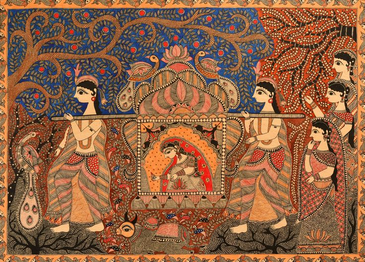
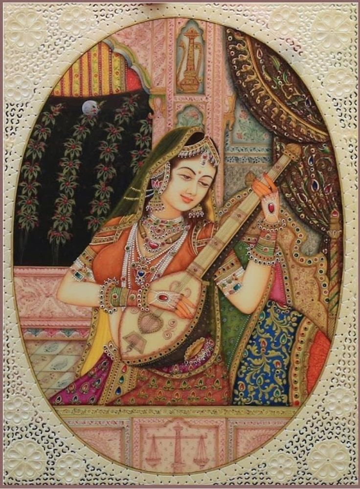
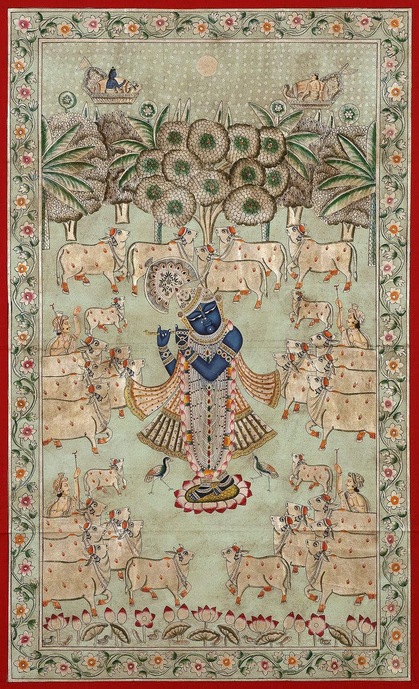
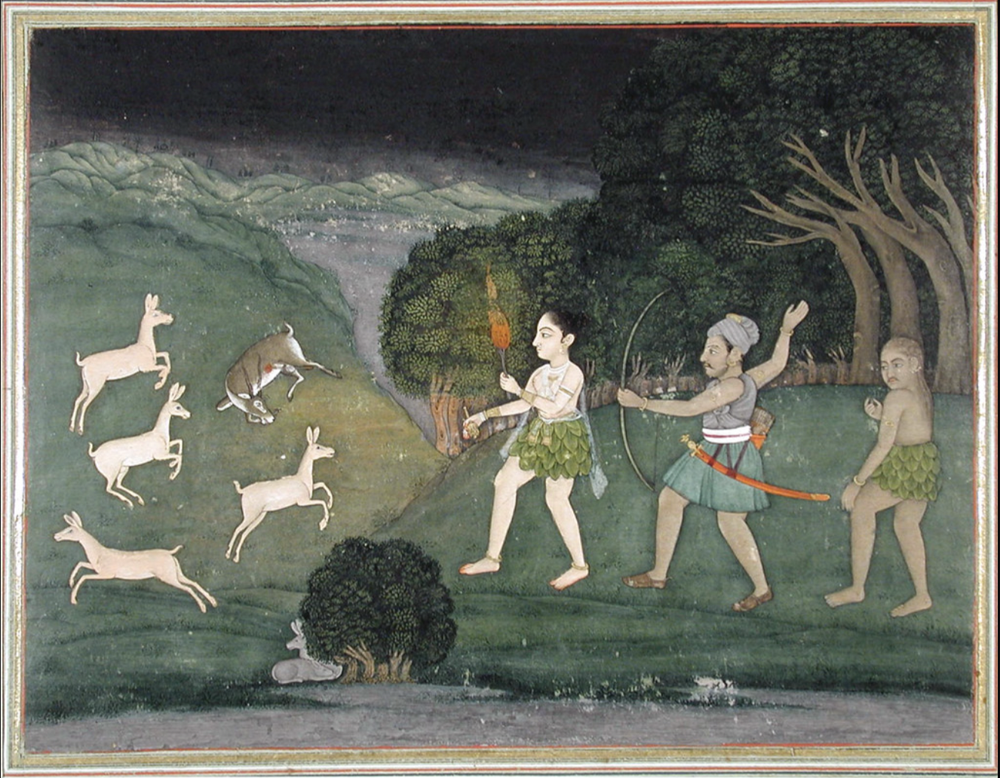
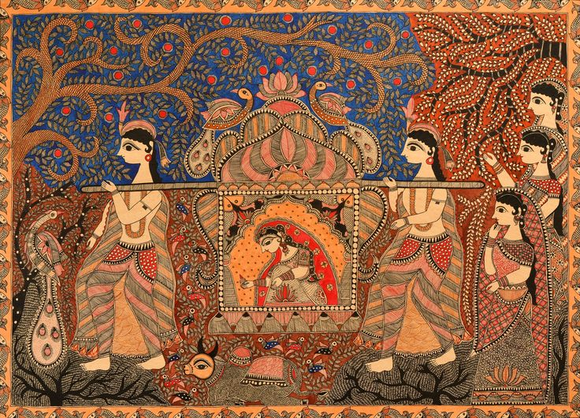
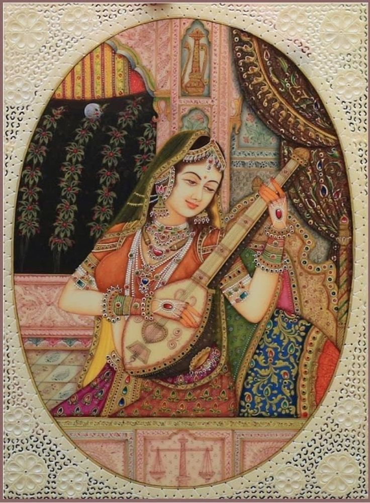
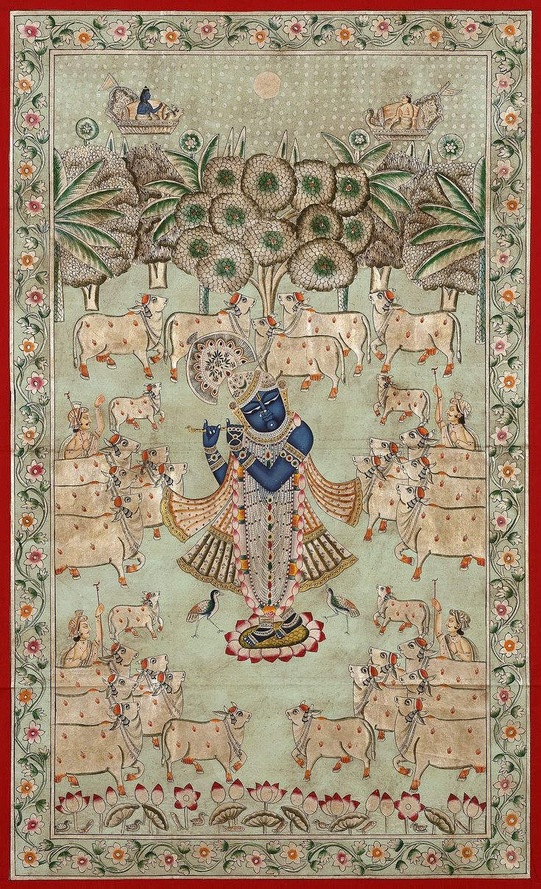
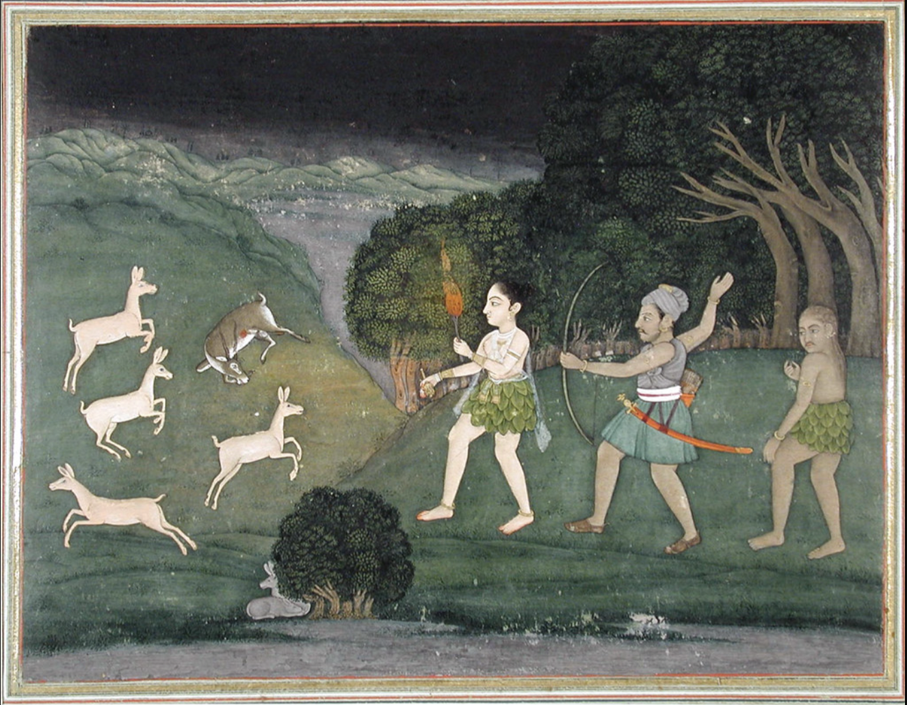
 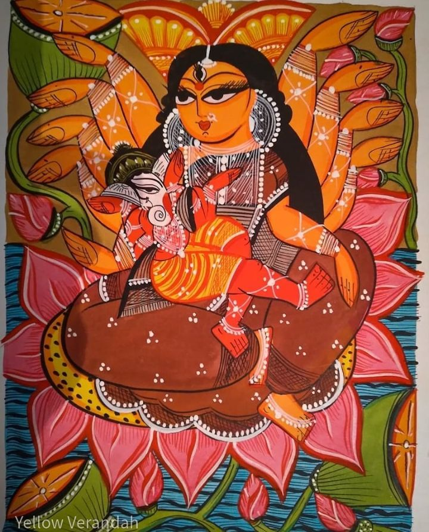
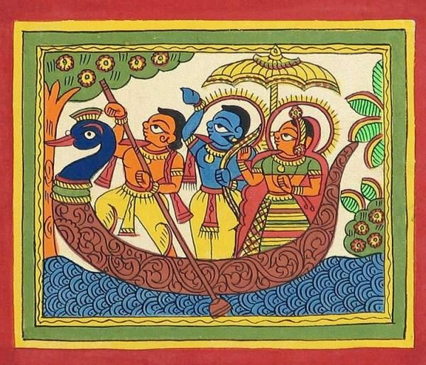
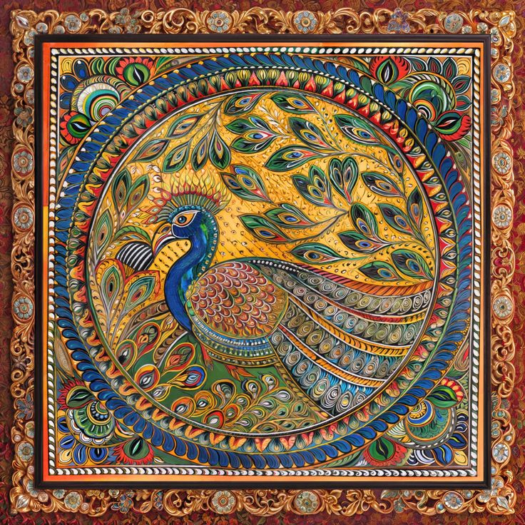
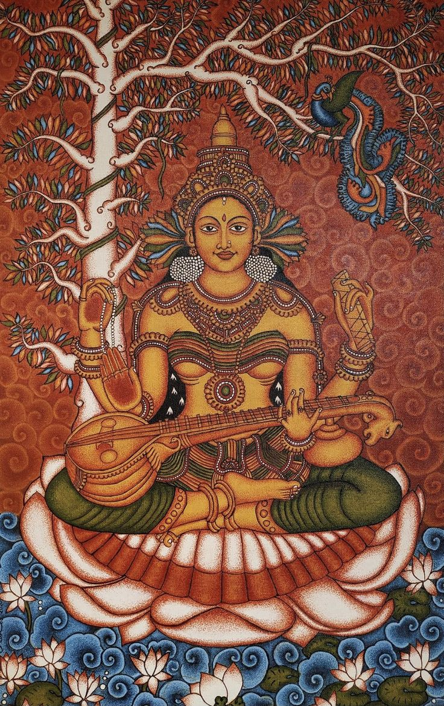
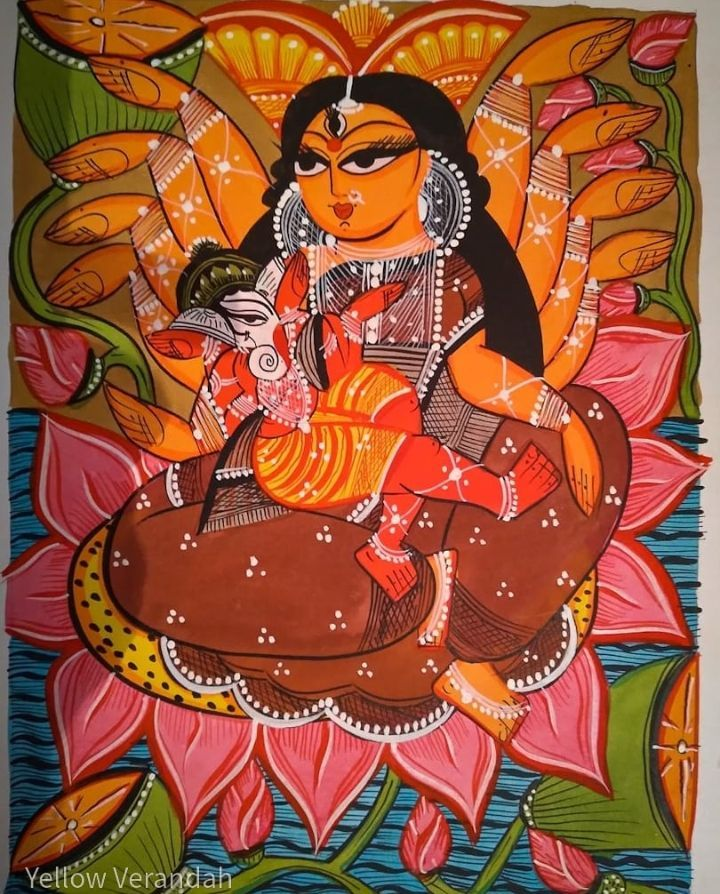
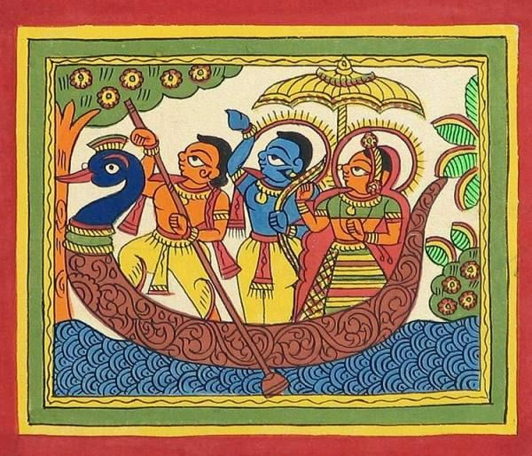
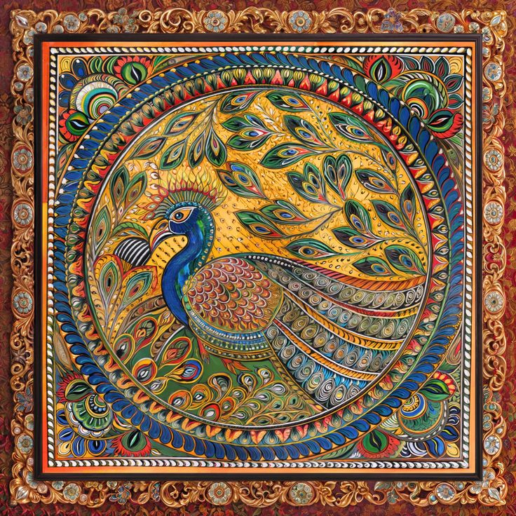
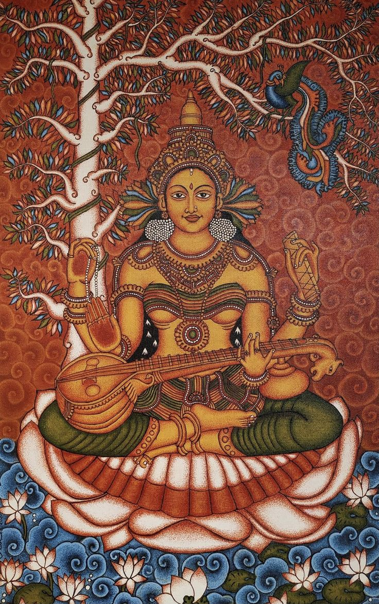

KALAMKARI
where every stroke tells a timeless tale of tradition and artistry.This 3000-year-old organic art of hand and block printing was traditionally used for making narrative scrolls and panels. This exquisite folk art has a strong connect with Persian motifs. Kalamkari derives its name from kalam or pen and is a legacy that has been handed down from generation to generation in Andhra Pradesh. The stylised animal forms, floral motifs and mehrab designs predominant in Kalamkari paintings have also found a place in Kalamkari textiles. Kalamkari art primarily involves earthy colours like indigo, green, rust, black and mustard.
MADHUBANI
vibrant threads of folklore woven into intricate, colorful tapestries.One of the most celebrate styles of Indian art is, Madhubani which originated in the Mithila region of Bihar as a form of wall art. This spectacular folk art style was unknown to the outside world until discovered by the British colonial William G. Archer in 1934 while inspecting the damage after the massive Bihar earthquake. Archer was amazed by the beautiful illustrations on the exposed interior walls of the houses…The beauty of Madhubani lies in its simple and evocative portrayal of culture and traditions.
MINIATURE ART
exquisite, detailed worlds captured in breathtakingly tiny strokThe Miniature painting style came to India with the Mughals in the 16th century and is identified as an important milestone in the history of Indian art. It developed into a distinct style with a combination of Islamic, Persian and Indian elements. The painting is done using natural stone colors on a paper-based “wasli”. Mineral colors, precious stones, conch shells, gold and silver are used in the miniatures. Fine brushwork, intricacy, detailing and stylization are the unique attributes of miniature painting. Across India, the miniature painting style has developed into distinct schools of miniature paintings like Kangra, Rajasthan, Malwa, Pahadi, Mughal, Deccan etc. to name a few.
PICHWAI PAINTING
divine narratives brought to life with intricate devotion and vibrant elegance.The Indian art of Pichwai originated as wall hangings behind the main deity in Krishna temples in Nathdwara. They narrate stories related to Lord Krishna. Gradually with commercialisation secular themes are also incorporated in the Picchwai style of painting. Picchwais are colourful and intricate works of art with concealed symbolism in the artistic motifs. This distinct devotional art practice has passed from one generation to another and a fine example of spirituality in art.
BHIL PAINTING
vibrant, expressive depictions of folklore and nature captured in bold, lively patterns.The Bhils reside in Madhya Pradesh, Gujarat, Rajasthan, and Maharashtra and are highly superstitious people. Art is very important to them and the rich textures of their paintings connect their life to nature. The Bhil paintings are traditionally done on the clay walls of their village homes and neem sticks, twigs, and natural colors are used to do so. The bright and vibrant colors are extracted from turmeric, flour, vegetables, oil, and leaves. These Bhil paintings depict the everyday life of this tribe and they usually contain large shapes covered with uniform dots. Some common depictions include nature, flora and fauna, Bhil deities, births and deaths, rituals, and festivals. Nowadays, this art form is practiced on a canvas and acrylic paints are used instead of natural dyes.
WARLI PAINTING
simple, rhythmic patterns that capture the essence of rural life with striking simplicity.This ancient Indian art is 2500-year-old tradition. Warli paintings of the Thane and Nasik areas of Maharashtra are closely linked with nature and social rituals of the tribe. Warli paintings showcase daily activities of the local people of that community like farming, dancing, hunting, praying etc. Traditionally, women used twigs to draw lively designs with rice paste on mud walls of tribal houses to mark celebrations of harvests or weddings. Simple geometrical patterns in white against a red or yellow surface are used to depict everyday life scenes. Warli art with its linear and monochromatic hues resembles the execution of pre-historic cave paintings.
KALIGHAT ART
dynamic, folk art that blends vibrant color with expressive, rhythmic storytelling.The Kalighat painting style was developed around Mid-19th century in the neighbourhood of Kali Temple in Calcutta. These drawings on paper were done by a group known as “patuas” hence the name Kalighata Pata. They depicted scenes of everyday life and mythological deities in a simple yet captivating manner and developed into the popular kalighat style of painting. Kalighat painters predominantly use earthy Indian colours like indigo, ochre, Indian red, grey, blue and white. The swift, seamless, free-flowing outline is a distinguished characteristic of Kalighat style of paintings. This painting style has inspired many artists, the most famous being Jamini Roy, one of the celebrated artist in Indian art.
PHAD
dynamic, folk art that blends vibrant color with expressive, rhythmic storytelling.Phad is the narrative scroll painting tradition from Rajasthan, dating back to a thousand years. Stories of local deities and heroes are painted on horizontal cloth scrolls in hues of red, yellow and orange The Phad scrolls show depictions of battlefields, adventure stories, legendary romances and the richness of the Indian princely states. The Phad painting style leaves one spellbound at how the folk artists accommodate multiple stories in a single composition, yet maintain the aesthetics of artistic expression.
GOND PAINTING
enchanting, dot-rich landscapes that vividly bring folklore and nature to life.These vibrant paintings created with a series of intricately arranged dots and dashes were developed by the Gondi tribe of central India. The tribals recreate mythological tales and oral histories to traditional songs, natural surroundings, important events and rituals in with great intricacy, rich detailing, and bright colors. Traditionally, colors were derived from natural resources like cow dung, plant sap, charcoal, coloured soil, mud, flowers, leaves etc. Gond artists now use commercial water-based colors to paint on paper and canvas. In today’s times, Gond art has moved beyond being a tribal art style with nameless artists to having internationally acclaimed artists like Jangarh Singh Shyam, Venkat Shyam, Bhajju Shyam, Durga Bai Vyam to name a few
KERALA MURAL PAINTING
ancient, mesmerizing art that transforms mythic stories into vibrant, detailed wall masterpieces.The vibrant Kerala mural paintings are one of the world’s most famous frescos and have deep spiritual roots depicting themes of Hindu mythology, epics, the classic frolics of Krishna as well as the mystic forms of Siva and Shakti. They also recount some legendary heroes of the bygone era. This traditional art style dates to the seventh and eighth century AD and is characterised by vivacious imagery, bold strokes, and vivid colours. Ochre-red, yellow- ochre, bluish- green, white and pure colors are predominantly used in Kerala mural painting.
PATACHITRA PAINTING
timeless narratives and intricate patterns brought to life on traditional scrolls with exquisite craftsmanship.Patachitra is the cloth scroll painting tradition from Odisha, dedicated to mythological and religious themes in Indian art. Bold, strong outlines, vibrant colors like white, red yellow and black with decorative borders are some of the characteristics of patachitra painting style, that is admired by art lovers across the world.